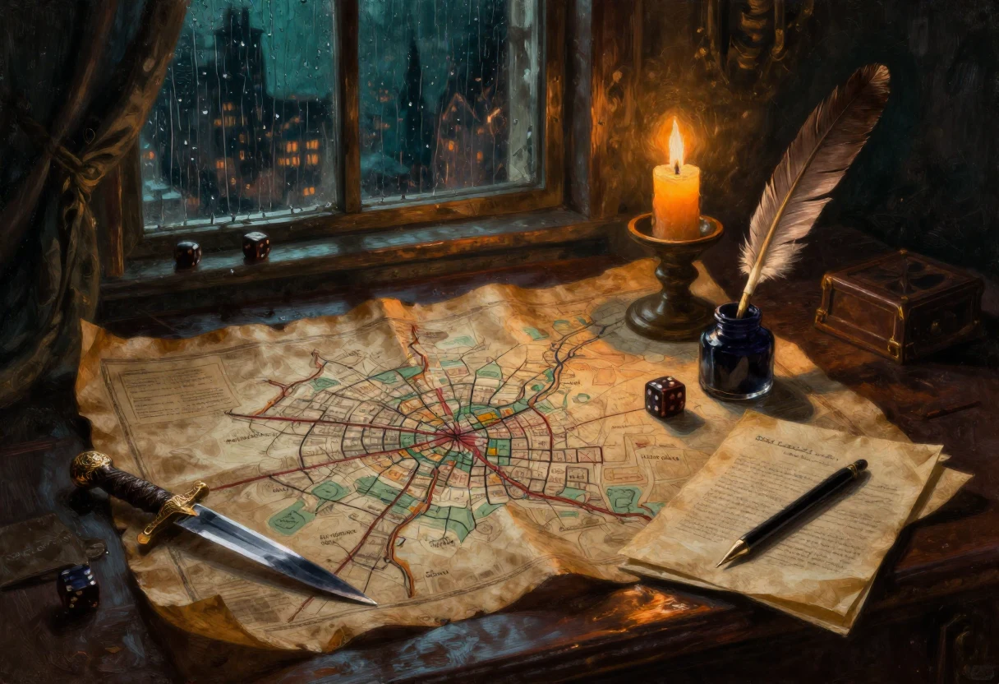

Je ponds de temps à autre des scénarios, et je refais toujours le même travail de base : trouver le lieu, le moment, les personnages, puis l'intrigue. Ces quatre éléments sont souvent étroitement liés. On croit choisir l'intrigue, et c'est le lieu qui décide.
Comme la cité la plus connue des meneurs aussi bien que des joueurs est de loin Samarande, je me retrouve souvent en train de feuilleter l'extension de Samarande à la recherche d'un quartier pouvant comporter une intrigue possible. Cette extension ne présente qu'un très faible rapport mauvais sur bons points, et elle a la particularité d'être déjà bien définie, lieux, personnages et activités, et de servir de base à nombre de meneurs qui s'y réfèrent : elle améliore la cohérence des scénarios qui dérivent au sein de Samarande. Bref, c'est une aide précieuse à l'élaboration de nombreux scénarios, avant un épuisement difficilement atteignable.
Il y a une raison plus profonde à ce réflexe. Un quartier déjà décrit vous donne gratuitement ce qu'un scénario improvisé doit inventer à la table : qui habite là, qui surveille, qui a intérêt à ce que rien ne change. Le meneur qui part d'un lieu connu ne raconte pas une histoire posée sur du vide.
Sinon, il reste toujours les six autres cités. Qui n'a jamais souhaité changer d'air pour aller adopter le rythme et le mode de vie de Djeddir, bien différent de Samarande ? Et Kalaar, est-elle toujours occupée par ces êtres reptiliens dont bien des conteurs et des bardes parlent et chantent sans que personne ne soit jamais vraiment allé confirmer la chose ? C'est intrigant tout de même, et qui dit forteresse naine dit mines de pierres précieuses et ouvrages nains divers, à condition que tout n'ait pas déjà été pillé ou que les galeries ne se soient pas toutes effondrées.
On aime son confort, c'est vrai : vivre chez soi, au sein de la bonne vieille Samarande, aux frais de l'honnête travailleur et de l'habitant peu prudent. Mais cela peut devenir frustrant à la force des parties. La concentration des richesses de Samarande est bien connue, mais il y a très probablement d'autres trésors, certainement bien cachés et protégés, dans des régions inexplorées, et qui n'attendent que d'être dérobés par les habiles voleurs expérimentés que sont les joueurs.
Et puis, à quand les suppléments pour Bejofa, puis pour les autres villes ? L'exemple de l'extension de Samarande est plutôt encourageant, non ?
Mais revenons à nos moutons : un scénario nécessite de motiver les joueurs. Quelles peuvent être ces motivations ?
| Mobile | Ce qu'il met sur la table |
|---|---|
| La richesse | argent, objets de valeur historique ou sentimentale, rançon, orfèvrerie faite de métaux et de bois précieux, incrustés ou non de diamants, de rubis, de gemmes et d'autres joyaux divers et variés. |
| Le pouvoir | rendre service à des amis, à son groupe, ce qui augmente la cohésion et l'entente et désigne un chef, à sa guilde, ce qui augmente l'estime et le rang de voleur, à un habitant lambda, de préférence riche et influent, surtout quand on lui sauve la vie, quitte à organiser soi-même l'assassinat de la personne en question pour mieux le déjouer héroïquement aux yeux de la victime, à un membre du Culte de la Pensée ou à un politicien, ce qui accroît fortement la popularité et la réputation. |
| Le défi | braver le danger et les risques les plus imprévisibles, une excitation à laquelle aucun voleur digne de ce nom ne se refuse un moment ou à un autre. |
D'autres mobiles sont plus grands encore, ou plus simples : la vengeance, la jalousie, l'amour, la folie, la crainte, la peur, l'honneur, ou tout simplement la survie. Et toutes ces raisons sont souvent très liées, car la vie d'un voleur est avant tout une question de priorité, à savoir bien gérer au jour le jour.
Une maladie rare, par exemple. Seules la magie ou de très rares herbes, très coûteuses, en sont les moyens de guérison. Sans le sou ? Il va falloir se magner le train. L'empoisonnement, ensuite, à votre insu : comme c'est dommage. Et qu'est-ce qu'il demande, le bon monsieur, en échange de l'antidote ?
Le mécanisme vaut pour tout. Un mobile n'est jamais une raison abstraite, c'est une dette avec une échéance. Le personnage ne vole pas parce qu'il est voleur : il vole parce qu'il lui reste trois jours.
Bien des raisons peuvent pousser un voleur, quel que soit son rang ou sa profession, à sortir des sentiers battus. C'est même là que le jeu commence à valoir la peine : le coup bien préparé dans son propre quartier est confortable, le coup qui oblige à traverser la ville, à dormir ailleurs et à dépendre d'inconnus est une aventure.
Ce qui manquait à cette page, et que j'ajoute ici : un scénario se juge à sa sortie, pas à son entrée. Si les joueurs peuvent refuser le contrat sans rien perdre, ce n'est pas un mobile, c'est une invitation. Le mobile doit coûter quelque chose à qui ne le saisit pas, et ce quelque chose doit être visible dès la première scène.
Prenons un lieu, un moment, deux personnages et une dette. Le lieu : l'arrière-salle d'une teinturerie du quartier 30, chaude, humide, qui sent le vinaigre. Le moment : la troisième heure de la nuit, quand les gardes changent de poste. Les personnages : une teinturière qui doit trois mois de loyer à un créancier, et un prévôt de nuit qui ferme les yeux en échange d'un service. L'intrigue : le service en question est un cambriolage chez le créancier, et la teinturière n'a pas dit que la maison était celle de son propre frère. Le reste se joue à la table.
Notes de la page « Aide au background et à la création de scénarios », vers 1999, remises en paragraphes et en tableau. Deux précisions : le fichier d'origine écrit Kahlaar là où la présentation du monde écrit Kalaar, j'ai gardé Kalaar ; et le texte s'arrête brutalement sur sa dernière phrase, les deux paragraphes qui suivent la liste des mobiles sont donc ajoutés pour cette édition. La section « Un exemple » est également ajoutée en 2026.